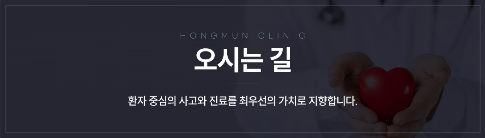

<!-- 메인영역 -->
<section id="sub-article">
	<style type="text/css">
		@import url('assets/css/SUIT.css');

		section#sub-article {
			padding: 0 0 0 0 !important;
		}

		.sub-article2 {
			padding: 0 10px;
		}

		h2 {
			font-family: 'suit';
			font-size: 28px;
			font-weight: 600;
			color: #1d2189;
			margin-top: 95px;
			margin-bottom: 5px;
			padding-bottom: 15px;
			text-align: center;
			letter-spacing: -2px;
			background: url('assets/images/tit_line.png') no-repeat bottom;
			padding-bottom: 20px;
		}

		.h2_small {
			font-size: 15px;
			height: 10px;
			margin-top: 20px;
			letter-spacing: 0.5px;
			color: #c4c4c4;
			text-align: center;
			font-weight: 200;
			margin-bottom: 2px;
			text-transform: uppercase;
			display: block;
			margin-bottom: 60px;
		}

		.root_daum_roughmap {
			width: 100% !important;
			/* height: 900px !important; */
		}

		.clinic-info {
			max-width: 760px;
			margin: 0 auto 50px;
			padding: 0 10px;
			font-family: "SUIT", "Pretendard", -apple-system, BlinkMacSystemFont, sans-serif;
			color: #1a1d2e;
		}
		.clinic-info dl {
			display: grid;
			grid-template-columns: 90px 1fr;
			row-gap: 18px;
			column-gap: 24px;
			margin: 0;
			padding: 28px 4px;
			border-top: 2px solid #1d2088;
			border-bottom: 1px solid #e6e8ef;
			align-items: start;
		}
		.clinic-info dt {
			font-size: 17px;
			font-weight: 700;
			color: #1a1d2e;
			letter-spacing: -0.02em;
			padding-top: 2px;
		}
		.clinic-info dd {
			margin: 0;
			font-size: 16px;
			font-weight: 400;
			color: #2a2d3a;
			letter-spacing: -0.015em;
			line-height: 1.6;
		}
		.clinic-info .hours-row {
			display: flex;
			gap: 12px;
			align-items: baseline;
		}
		.clinic-info .hours-row + .hours-row { margin-top: 6px; }
		.clinic-info .hours-label {
			flex: 0 0 64px;
			font-weight: 600;
			color: #1a1d2e;
		}
		.clinic-info .hours-label.weekend { color: #1d2088; }
		.clinic-info .hours-label.closed { color: #c0392b; }
		.clinic-info .hours-time { font-weight: 500; }
		.clinic-info .hours-note {
			color: #6b7280;
			font-size: 14px;
			margin-left: 8px;
		}
		.clinic-info .lunch-note {
			margin-top: 14px;
			font-size: 14px;
			color: #6b7280;
			letter-spacing: -0.01em;
		}

		@media (max-width: 520px) {
			.clinic-info dl {
				grid-template-columns: 70px 1fr;
				column-gap: 16px;
				row-gap: 14px;
				padding: 22px 4px;
			}
			.clinic-info dt { font-size: 15px; }
			.clinic-info dd { font-size: 15px; }
			.clinic-info .hours-label { flex-basis: 56px; }
		}
	</style>
	<div></div>

	<table border="1" cellpadding="0" cellspacing="1" width="100%">
		<colgroup>
			<col style="text-align: center;" width="50%" />
			<col style="text-align: center;" width="50%" />
		</colgroup>
		<tbody>
			<tr>
				<td
					style="border-width: 1px;  border-style: solid; border-color: #b3c6e1; background:#ceddf3; border-image: initial; text-align: center;">
					<strong style="font-size: 14px; letter-spacing: -0.3px; text-align: center;"><a href="#1"><span
								style="color: #2e3065;">영업시간 &amp; 오시는 길</span></a></strong>
				</td>
				<td
					style="border-width: 1px;  border-style: solid; border-color: #b3c6e1; background:#ceddf3; border-image: initial; text-align: center;">
					<strong style="font-size: 14px; letter-spacing: -0.3px; text-align: center;"><a href="#2"><span
								style="color: #2e3065;">주차 안내</span></a></strong>
				</td>
			</tr>
		</tbody>
	</table>

	<section class="sub-article2"><!-- 영업시간 & 오시는 길 -->
		<p id="1"></p>

		<h2>영업시간 &amp; 오시는 길</h2>

		<p class="h2_small">HONGMUN CLINIC</p>

		<div class="clinic-info">
			<dl>
				<dt>주소</dt>
				<dd>경기 의정부시 호국로 1319 남평프라자 8층</dd>

				<dt>전화</dt>
				<dd>031-844-8275</dd>

				<dt>영업시간</dt>
				<dd>
					<div class="hours-row">
						<span class="hours-label">평일</span>
						<span class="hours-time">09:00 - 17:30</span>
					</div>
					<div class="hours-row">
						<span class="hours-label weekend">토요일</span>
						<span class="hours-time">09:00 - 13:00</span>
						<span class="hours-note">점심시간 없이 진료</span>
					</div>
					<div class="hours-row">
						<span class="hours-label closed">일·공휴일</span>
						<span class="hours-time">휴진</span>
					</div>
					<div class="lunch-note">※ 평일 점심시간 12:30 - 13:30</div>
				</dd>
			</dl>
		</div>

		<!--
	* 카카오맵 - 약도서비스
	* 한 페이지 내에 약도를 2개 이상 넣을 경우에는
	* 약도의 수 만큼 소스를 새로 생성, 삽입해야 합니다.
    --><!-- 1. 약도 노드 -->

		<div class="root_daum_roughmap root_daum_roughmap_landing" id="daumRoughmapContainer1697083771550">
			&nbsp;</div>
		<!-- 2. 설치 스크립트 -->
		<script charset="UTF-8" class="daum_roughmap_loader_script" src="assets/js/roughmapLoader.js"></script>
		<!-- 3. 실행 스크립트 -->
		<script charset="UTF-8">
			new daum.roughmap.Lander({
				"timestamp": "1697083771550",
				"key": "2gf9z",
				"mapWidth": "360",
				"mapHeight": "240"
			}).render();
		</script><!-- 주차 안내 -->

		<p id="2"></p>

		<h2>주차안내</h2>

		<p class="h2_small">HONGMUN CLINIC</p>

		<div style="margin-bottom:60px;"></div>
	</section>


</section>
<!-- //메인영역 -->
